|
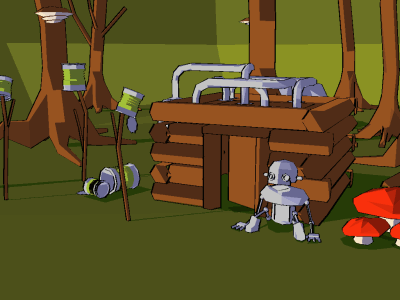 |
|
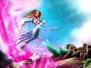 |
|
Caillou
Mandarine |
Purple
- Eclosion
Splif^Orion^Aegis |
|
|
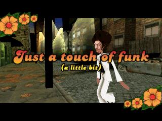 |
L.T.P. 5 Delayed |
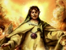 |
|
Just
a Touch of Funk Digital Murder
|
sublime
inferno ^ haujobb |
|
|
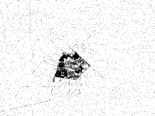 |
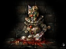 |
|
|
Antimoney
3States |
Clown
Nytrik ^ Cocoon |
|
|
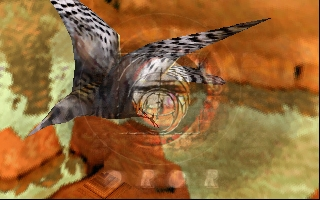 |
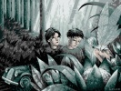 |
|
|
Faded
Oror |
Six
years later
Gelmir |
|
|
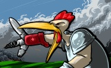 |
|
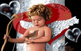 |
|
The
Mutant Pouletz Project 2
Mutant inc |
Let
there be love
X-Man ^ Sunset Design |
|
|
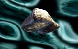 |
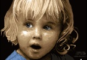 |
|
|
Funkkin
Haujobb |
Her
little girl
Fred ^ Calodox |
This
website is especially dedicated to Asphyx coz he is toooooo funny :))
Je me souviens de Chandra faisant le mariole avec son talkie-walkie,
du jour où il a osé faire un strip-tease devant 400 personnes,
de l'énorme bannière d'Eclipse,
de Traven marchant comme un fantôme après une semaine passée sans dormir pour faire l'opening,
d'Xbarr souriant comme un enfant du sud (qu'il est),
de Djam et de son korg,
de Mars en train de ronfler,
des Finlandais de Tpolm en train de jouer aux dames chinoises,
de Hulud qui nous montrait les prepreviews de son moteur de lypsynch pour sa prochaine demo,
de Fred et Leto arrivant avec leurs toblerones de 4 kg,
de Danube et des fou rires de 4h du mat,
des organisateurs à moitié à poil à cause des 48°C de la mezzanine,
de Phar m'expliquant qu'il avait pas vraiment regardé les Suédoises quand il était là bas (je l'ai jamais cru bien sur),
du moustique qui m'avait fait chier pendant 2 heures quand j'essayais de dormir derrière les tentures de la salle,
de Shodan et de son chapeau magique,
des afters monstrueuses où on hurlait des chansons Françaises a en faire peur aux étrangers (sorry Zodiak/Cascada),
des kilos de Macdos posés sur la scène que Yes avait acheté pour bouffer pendant l'after,
de Skal et de son calme a toute épreuve,
de Nix et Sarix prenant le soleil a l'ombre des arbres parisiens,
des wazzas désinvoltes venus de suisse qui faisaient leur apparition (c t bien la buenzli;),
de Melwyn/Haujobb perché sur un saule pleureur buvant une bière,
de Statix et Md parlant de Londres assis sur la pelouse,
de l'excursion au supermarché avec picard et la Calodox team,
des réveils sous la pluie quand je dormais dehors,
du sourire des mémés qui venaient le dimanche à 9h promener leurs toutous dans un parc jonché de dormeurs en sac de couchage,
des tentes faites de canettes de bières,
des gars d'Haujobb complètement bourrés,
du repas vin et saucisson dans l'herbe avec Silicon et Greuh (l'amiga corner),
de la fois ou je chantais supertimor avec U2/Popsyteam et mon pote Flod,
des blagues de Ps,
d'Orion finissant une demo sans coders,
d'Atc/Cocoon me traitant de merde paske shad2 buggait sur ma machine (il devait être fatigué;),
de Mars essayant désespérement de finir "PouletMutants2" avant la deadline,
des fast compos code de Skal que personne ne comprenait,
de la honte que devait avoir l'unique gamer qui avait été repéré,
des douches fraîches a réveiller un mort de bon matin (au moins y en avait),
de l'horrible odeur de pied de la sleeping room,
des promenades dans la ville à la recherche de cigarettes le dimanche,
de Arcane chantant 'Helene je m'appelle Helene',
des larmes de Yes à chaque closing cérémonie,
de la "ola" dans la salle,
de la photo de groupe à la fin,
de Made,Titan,Knos,Traven,Boz,Nitrik triant les productions avec amour,
de Moby et Skal se tappant le boeuf,
d'Audiomonster les bras croisés regardant les démos des ptits jeunes,
de Redribbon recevant son cochon pour son anniversaire,
de Jylam et de sa crème chantilly sur le ventre,
de la peur de voir le plancher s'écrouler après l'open ceremonie de Traven et Xbarr,
de la même peur après la 'just a touch of funk' de Digital Murder,
d'Eclipse remettant aux goûts du jour les effets oldskool,
de Ninja/Scoopex plongé dans le code de son Amiga 500,
putain, les LTP.....que des bons souvenirs !!! J'arrive pas a croire que c'est derrière nous !!! Malheureusement c'est du passé mais ça restera sûrement gravé dans pas mal de mémoires.
sur ce, je vous laisse..... y faut que j'aille pleurer un peu, je me sent pas très bien tout à coup.
------------------------------------------------------------------------------